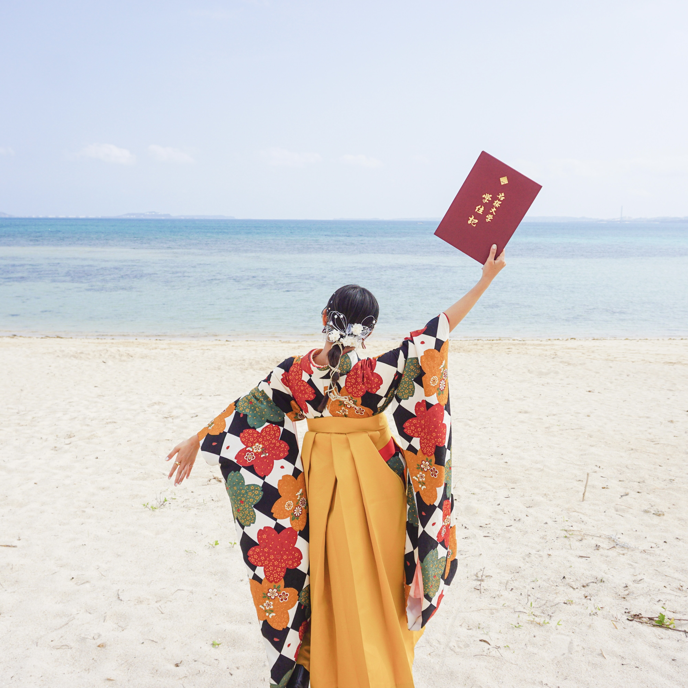
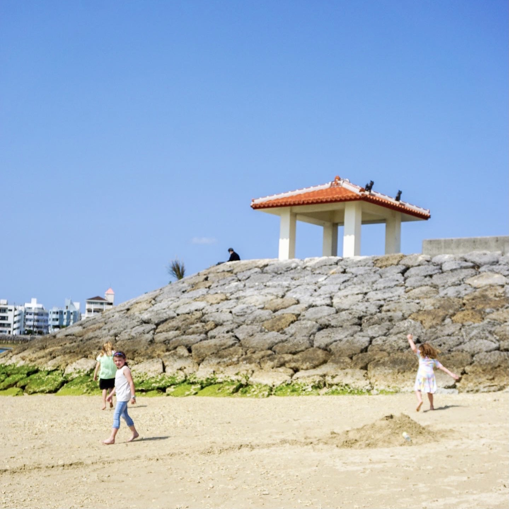
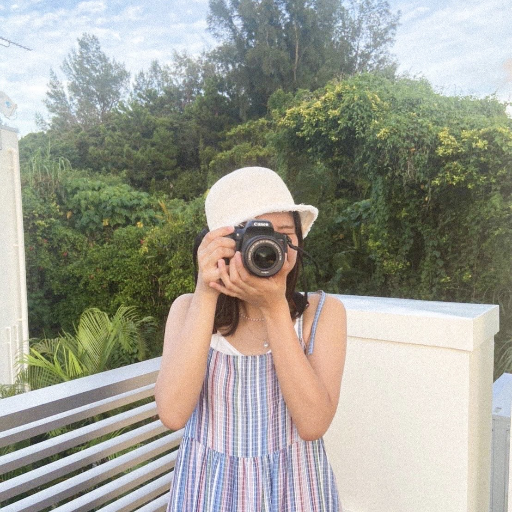

― Ab☻ut Me. ―
わたしのこと
My Profile.

はいたーい！南国生まれの南国育ち、
“実菜美”とかいて“みなみ”です☻
いつもわくわくを忘れない大人でありたい。
好奇心旺盛、すなおで元気な22歳です。
ふるさと
Home town.

沖縄で育った22年間。
透き通る海、青々とした自然、
ゆったりとした時間、あたたかい人々
わたしを自由にのびのび育ててくれた
大好きな場所です。
すきなこと
Favorite.

イラスト、写真、ドライブ、ダンスetc...
なんでも楽しくトライしちゃいます。
でもB型なので、“マイペーススタイル”
Blog
-

2020年、元旦。今年も初日の出を拝みに大阪城に行って来ました。一つ前の記事が2019年の初日の出なので、盛大にさぼってしまい反省。
more -

2019年、元旦。自宅から近いということもあり、大阪城公園へ初日の出を拝みにいきました。日の出時刻は7:04、少し早起きすれば大丈夫。
more -

友人夫婦に女の子が生まれたので、会いに行ってきました。お母さんのお腹が少しずつ大きくなっていく過程も見ていたので、元気な赤ちゃんで嬉しくなりました。
more -

急に思い立ってじーちゃんとばーちゃんの写真を撮りたくなり、重たい中判カメラを抱えて実家に行ってきました。
more -

友人のお子さんの七五三参りを撮影させてもらいました。友人宅に着いたとき、着付けも終わってハリーポッターの映画に夢中だったユリカちゃん。
more -

平野にあるパン屋、トロワさんの仕事場を撮らせていただきました。当日お店に到着したのが朝の4時、すでにいくつかのパンが出来上がっていました。
more -

大阪でストリートスナップを撮っているyujiさん主催の「写ルンですフォトフォーク」へ参加してきました。
more -

時間が過ぎるのは早いもので、撮影データを見ると伏見稲荷大社・東福寺へ行ったのは5月。ずっと行ってみたかった京都の伏見稲荷大社へ。
more -

新緑がとてもきれいな唐招提寺へ行ってきました。唐招提寺はあの有名な鑑真が建立したお寺。行くまで知らなかったのですが1998年に世界遺産に登録されています。
more -

天気のいい日に満開の桜を撮影してきました。ちょうど天気予報もこの日以外は曇りや雨予報だったので、どこも人がいっぱい。日本人はやっぱり桜が好きなんですね。
more -

早朝の大阪城、タイミングよく朝日が昇るところを撮ることができました。昨年末から写真を撮りに行く機会を作るようになって、どんどん写真のおもしろさを実感しています。
more -

京都の鞍馬へ。鞍馬山のケーブルカーが改修工事中だったこともあって、観光客も少なくゆっくり見れました。今回のカメラもFUJIFILMのX-T10に35mmと14mmの2本のレンズを持参。
more